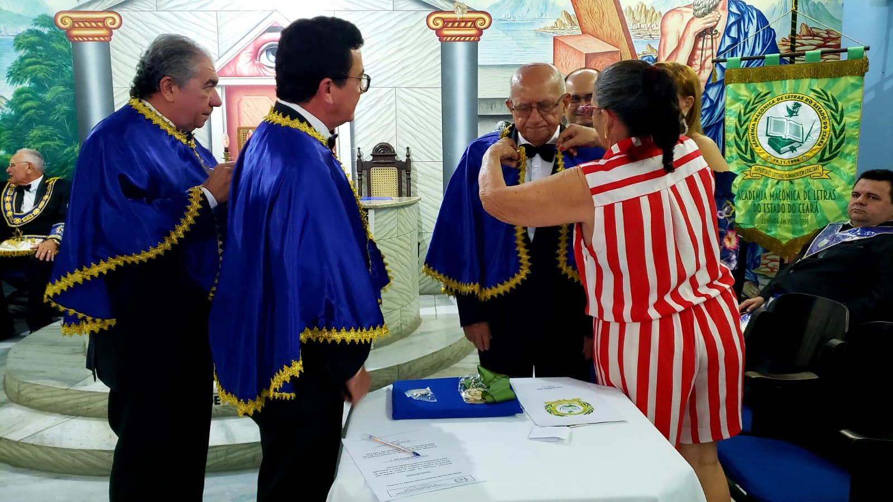
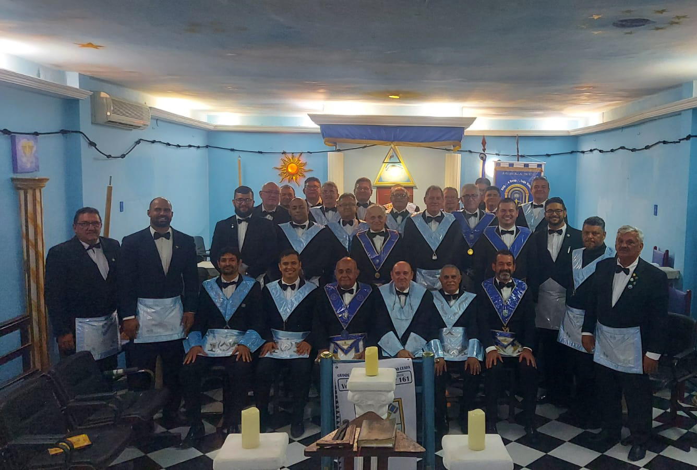
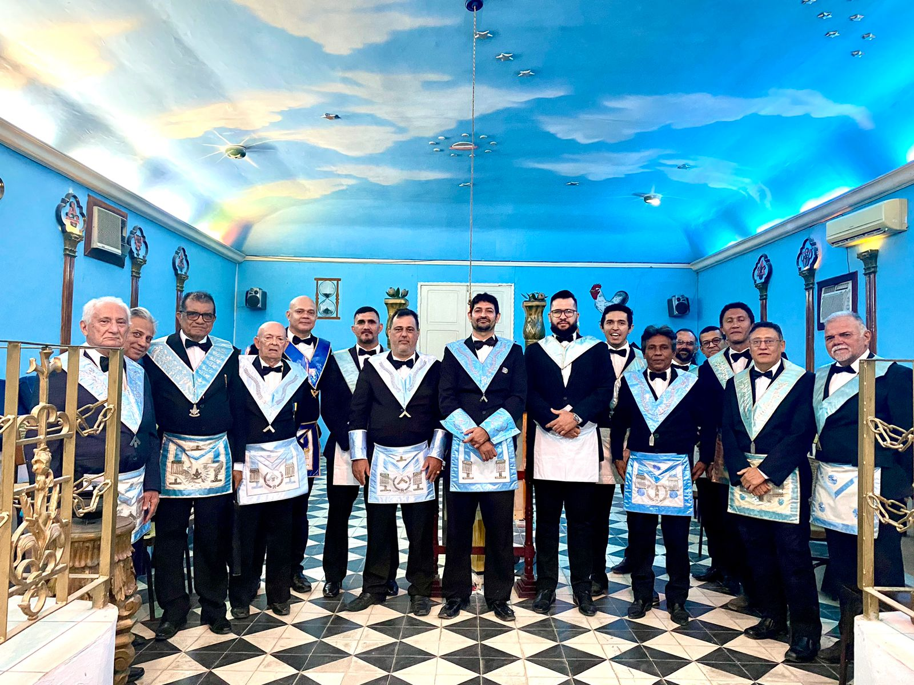

Galeria de Fotos do Distrito Deus e Maracanaú nº 78 Posse do Ir∴ José Beneval Lins na Academia Maçônica de Letras.  Deus e Maracanaú nº 78 Posse do Ir∴ José Beneval Lins na Academia Maçônica de Letras. Deus e Maracanaú nº 78 Posse do Ir∴ José Beneval Lins na Academia Maçônica de Letras. Verdade e Justiça nº 161 Visita dos IIr∴ Vista dos II∴  Verdade e Justiça nº 161 Detalhe no interior do templo  Deus e Maranguape nº 15 Verdade e Justica nº 161 Sessão Magna de Iniciação